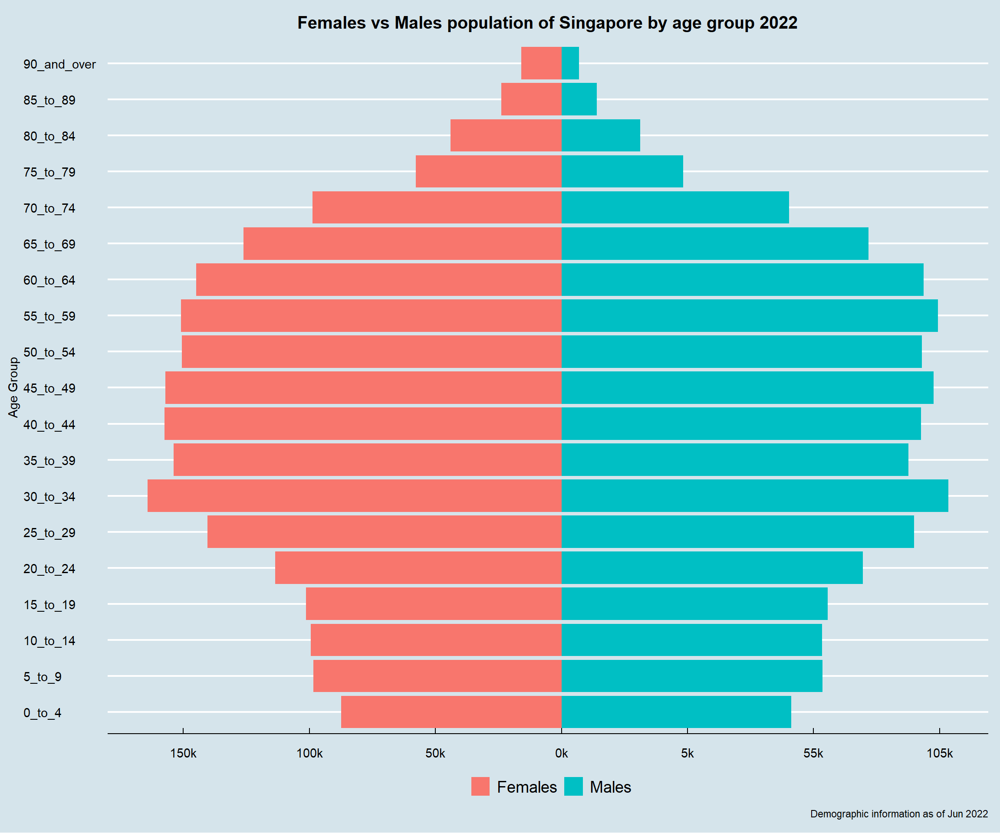
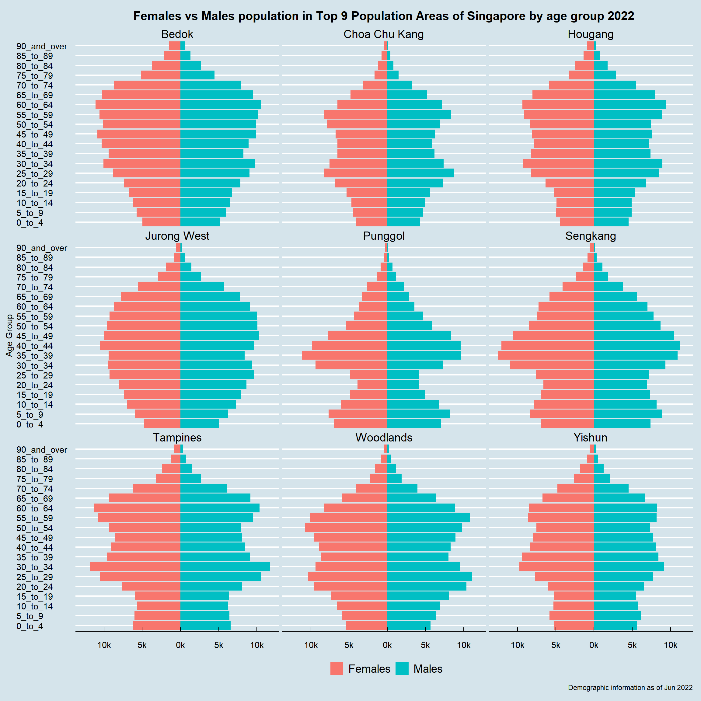

Take-home Exercise 02
1 Overview
The requirement of this exercise is to critic the submission that revealed demographic structure of Singapore at nine planning areas from one of my classmates in terms of clarity and aesthetics, prepare a sketch for the alternative design by using the data visualisation design principles and best practices learned from Lesson 1 and 2. Eventually, the original design will be remade below by using ggplot2 and its extensions together with tidyverse packages from R.
Original dashboard prepared could be retrieved through this link.
Below is a snapshot of the dashboard.

2 Tableau data visualisation critique
2.1 Clarity
2.1.1 Missing a well worded title
By looking at the dashboard itself in full screen mode, there are insufficient information on what message this chart is trying to relay.
Additionally, nine planning areas’ demographic structure has been shown indeed. The tableau public dashboard, however, is published using the name of ‘Singapore Population distribution by age’. Misunderstanding might be raised as people might wrongly conclude that there are only nine areas in total in Singapore, based on this dashboard.
2.1.2 Misalignment in x-axis across nine plots
For the chosen nine areas’ plots, some different scales are observed in the x-axis (population count). Misleading visual representation originated from the graph might result in wrong conclusion being made.
2.1.3 Weak analytics capabilities
Despite the pyramid shape of each of the nine areas has been plotted, the dashboard seems to be short of analytics capabilities overall. A meaningful benchmark seems to be missing here. It might be helpful to improve on this through providing reference on how the overall Singapore population pyramid looks like.
2.2 Aesthetics
2.2.1 Usage of an unrecommended color
Inside the dashboard, males population is being represented with a color similar to dark khaki. A color like this that is similar to ‘puke yellow’ is discouraged to be used, according to the class discussion during week 2 lecture.
2.2.2 Over-packed y-axis ticks
Given the granularity of this study, there are many age groups to be presented on the y-axis. However, the y-axis on the current dashboard is too packed with little to no space in between.
2.2.3 Repeated appearance of x & y-axis across all plots
The same x & y-axis are used across all nine plannings. Due to the complexity from the data, the dense axes seem to be distracting especially for plots inside the second and third rows and columns.
3 Sketch of the proposed design

4 Remake the original design in R
4.1 Data source
For this exercise, the data source remained the same as what was used in exercise 01.
4.2 Libraries to be used:
In this exercise, main libraries to be used are listed below. pacman is used to check on and ensure the installation of packages.
library(pacman)
pacman::p_load(tidyverse,
ggplot2,
ggrepel,
ggthemes,
patchwork,
dplyr)4.3 Data loading:
Load the csv file below for our usage later.
population <- read_csv('Data/SG_Population_Jun2022.csv')Rows: 75696 Columns: 7
── Column specification ────────────────────────────────────────────────────────
Delimiter: ","
chr (5): PA, SZ, AG, Sex, FA
dbl (2): Pop, Time
ℹ Use `spec()` to retrieve the full column specification for this data.
ℹ Specify the column types or set `show_col_types = FALSE` to quiet this message.4.4 Data wrangling
As a good practice, the structure of the raw data is inspected to identify if any data manipulation would be beneficial for our usage later on:
str(population)spc_tbl_ [75,696 × 7] (S3: spec_tbl_df/tbl_df/tbl/data.frame)
$ PA : chr [1:75696] "Ang Mo Kio" "Ang Mo Kio" "Ang Mo Kio" "Ang Mo Kio" ...
$ SZ : chr [1:75696] "Ang Mo Kio Town Centre" "Ang Mo Kio Town Centre" "Ang Mo Kio Town Centre" "Ang Mo Kio Town Centre" ...
$ AG : chr [1:75696] "0_to_4" "0_to_4" "0_to_4" "0_to_4" ...
$ Sex : chr [1:75696] "Males" "Males" "Males" "Males" ...
$ FA : chr [1:75696] "<= 60" ">60 to 80" ">80 to 100" ">100 to 120" ...
$ Pop : num [1:75696] 0 10 20 60 10 0 0 0 20 50 ...
$ Time: num [1:75696] 2022 2022 2022 2022 2022 ...
- attr(*, "spec")=
.. cols(
.. PA = col_character(),
.. SZ = col_character(),
.. AG = col_character(),
.. Sex = col_character(),
.. FA = col_character(),
.. Pop = col_double(),
.. Time = col_double()
.. )
- attr(*, "problems")=<externalptr> For easier data manipulation and better visualisation effect, the raw data is duplicated below.
pop_temp <- populationTo keep the age groups arranged in a sorted manner, the format of Age Group column (‘AG’) will be transformed from text to factor. This would enable us to perform necessary adjustment in sorting to get the desired output.
pop_temp$AG <- as.factor(pop_temp$AG)
levels(pop_temp$AG) [1] "0_to_4" "10_to_14" "15_to_19" "20_to_24" "25_to_29"
[6] "30_to_34" "35_to_39" "40_to_44" "45_to_49" "5_to_9"
[11] "50_to_54" "55_to_59" "60_to_64" "65_to_69" "70_to_74"
[16] "75_to_79" "80_to_84" "85_to_89" "90_and_over"As can be seen above, the age group ‘5_to_9’ is not falling in the right place. To correct this, a manual swap is done below.
pop_temp$AG <- factor(pop_temp$AG,levels(pop_temp$AG)[c(1,10,2:9,11:19)])
levels(pop_temp$AG) [1] "0_to_4" "5_to_9" "10_to_14" "15_to_19" "20_to_24"
[6] "25_to_29" "30_to_34" "35_to_39" "40_to_44" "45_to_49"
[11] "50_to_54" "55_to_59" "60_to_64" "65_to_69" "70_to_74"
[16] "75_to_79" "80_to_84" "85_to_89" "90_and_over"For the ease of visualisation the population of the two genders side by side, an extra column is prepared such that the population of females would be recorded as values with negative signs, while the population of males would be in positive signs.
Consequently, the female population would be on the left-hand-side and the male population would be on the right-hand-side.
pop_temp$Pop_abs <- ifelse(pop_temp$Sex == "Males",
pop_temp$Pop,
-1*pop_temp$Pop)4.5 Visualisation
4.5.1 Population pyramid of Singapore
ggplot is the main package that is used to plot the desired chart.
p1 <-
ggplot(data=pop_temp,
aes(x=AG,
y=Pop_abs,
fill = Sex)) +
geom_bar(data=subset(pop_temp, Sex == "Males"),stat = "identity") +
geom_bar(data=subset(pop_temp, Sex == "Females"),stat = "identity") +
xlab("Age Group") +
ylab(NULL) +
coord_flip() +
scale_y_continuous(breaks = seq(-200000, 200000, 50000),
labels = paste0(as.character(c(seq(200, 0, -50), seq(5, 200, 50))),"k")) +
ggtitle("Females vs Males population of Singapore by age group 2022") +
labs(caption = "Demographic information as of Jun 2022") +
scale_fill_discrete(name="") +
theme_economist() +
theme(legend.position = "bottom",
plot.title = element_text(size = 15,
hjust = 0.5,
margin = margin(0,0,10,0)),
axis.title.y = element_text(vjust = 2.5))
p1
With the overall Singapore population pyramid available, the next question to answer would be: which are the nine areas to be studied for this exercise?
To answer this, the population is aggregated by planning areas. Duplicate the required data and save as an individual dataset.
pop_temp_pa <- pop_temp %>%
group_by(PA) %>%
summarise(total_pop = sum(Pop)) %>%
arrange(desc(total_pop))4.5.2 Population distribution by planning areas
Population of each area is displayed using bar chart. With this, the distribution of population by areas is easily visible.
p2 <-
ggplot(data=pop_temp_pa,
aes(x=reorder(PA, +total_pop),
y=total_pop)) +
geom_col() +
xlab(NULL) +
ylab(NULL) +
ggtitle("Population of Singapore by planning areas 2022") +
labs(caption = "Demographic information as of Jun 2022") +
coord_flip() +
scale_y_continuous(breaks = seq(0, 300000, 50000),
labels = paste0(as.character(c(seq(0, 300, 50))),"k"),
expand = c(0, 0)) +
scale_x_discrete(expand = c(0.01, 0)) +
theme_economist() +
theme(plot.title = element_text(size = 15,
hjust = 0.5,
margin = margin(0,0,10,0)),
axis.text.y = element_text(size = 10))
p24.5.3 Population pyramid of nine selected planning areas
Using the above chart, it is obvious that the top nine planning areas with largest population are:
Bedok,
Tampines,
Jurong West,
Sengkang,
Woodlands,
Hougang,
Yishun,
Choa Chu Kang,
Punggol.
Considering their rather significant population numbers, further study of population pyramid would be conducted on them.
top_9 = c("Bedok",
"Tampines",
"Jurong West",
"Sengkang",
"Woodlands",
"Hougang",
"Yishun",
"Choa Chu Kang",
"Punggol")
pop_top_9 = pop_temp %>%
filter(pop_temp$PA %in% top_9)By filtering the overall Singapore data set and following the same approach on plotting the overall Singapore population pyramid, the nine chosen areas’ population pyramid are therefore presented below:
p3 <-
ggplot(data=pop_top_9,
aes(x=AG,
y=Pop_abs,
fill = Sex)) +
geom_bar(data=pop_top_9,stat = "identity") +
xlab("Age Group") +
ylab(NULL) +
coord_flip() +
facet_wrap( ~ PA) +
scale_y_continuous(breaks = seq(-15000, 15000, 5000),
labels = paste0(as.character(c(seq(15, 0, -5), seq(5, 15, 5))),"k")) +
ggtitle("Females vs Males population in Top 9 Population Areas of Singapore by age group 2022") +
labs(caption = "Demographic information as of Jun 2022") +
scale_fill_discrete(name="") +
theme_economist() +
theme(legend.position = "bottom",
plot.title = element_text(size = 15,
hjust = 0.5,
margin = margin(0,0,10,0)),
# axis.title.y = element_text(margin = margin(t = 0, r = 0, b = 0, l = 10)),
axis.title.y = element_text(vjust = 2.5),
strip.text = element_text(vjust = 1))
p3
4.5.4 Final dashboard
To complete the story within one dashboard, three graphs above are composed into one using Patchwork.
(p1 + p2) / p3
5 Reflection
This exercise is an extension from exercise 1. Through attempting this exercise, features from both Tableau and R (ggplot2 specifically) have been greatly appreciated. Besides, through repeatedly revising lesson 1 and 2, importance on using right visualisation and tips on creating meaningful visualisation using R for analytics usage have been fully comprehended.
Last but not the least, by appreciating and referencing classmates’ work that were shared by prof, peer learning is also becoming part of this learning journey and making it more inspiring and innovating.